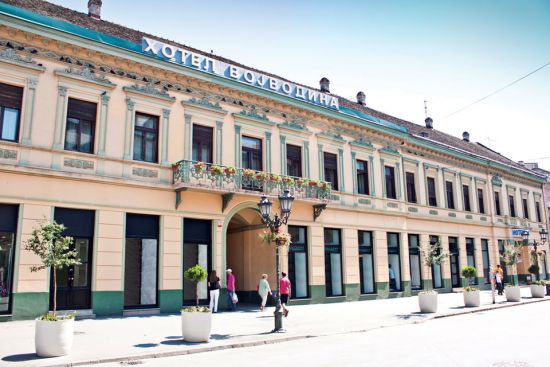

About Novi Sad
Welcome to Novi Sad, a city with an open heart, where 28 nations and nationalities live. A city of
colorful
cultures, customs and religion.
At the beginning of the 16th century, the first settlers built their huts on the site of today's town,
not
realizing that a large and prosperous town would eventually develop on that site. The first larger
settlements were created thanks to the construction of the Petrovaradin fortress in 1692. Already in the
middle of the 17th century, the city received great commercial and self-governing privileges, and by the
charter of Maria Theresa in 1748, it was declared a free royal city, it received the coat of arms and
the
official name of Neoplanta, in Latin, that is, Novi Sad, in Serbian, which literally meant "young
vineyard".
. In the first half of the 19th century, Novi Sad grew into a city that many described as the most
beautiful
town on the lower Danube. The rise was tragically interrupted by revolutionary events in the middle of
the
19th century when the people of Novi Sad did not recognize Hungarian rule. On July 12, 1849, the
Austrian
army under the command of ban Jelačić opened cannon fire on the Petrovaradin fortress, where the
Hungarian
army was stationed, which bombarded Novi Sad with 200 cannons. Of about 2,800 houses, only 800 remain,
and
the population has decreased from 20,000 to 6,000. after the end of the rebellion, in 1852, the
reconstruction of the city began. It took more than 20 years for Novi Sad to return to its pre-bombing
condition. This national power reached its full strength and expression in the era of the Youth Movement
and
Miletic's struggle for national freedom, when Miletic called Novi Sad, the Athens of Serbia.
According to the last population census from 2011, over 250,000 inhabitants live in Novi Sad, while more
than 340,000 inhabitants live in the administrative territory of the city of Novi Sad.
What to visit
Serbian National Theater
The oldest in the country, founded way back in 1861. In 1928, the theater burned down. Since then, the construction of the new building has been eagerly awaited. After 6 years of construction, it was opened in April 1981. The large hall has 940 seats, and the small hall has 373 seats. In front of the building there are monuments to Jovan Steria Popović and Pero Dobrinović
Freedom Square
The heart of Novi Sad. On the site of the former Magistrate, the Town Hall was built according to the project of Đerđe Molnar in the Neo-Renaissance style in 1895, modeled after the town hall in Graz. One of the most impressive mayors was Svetozar Miletić, whose monument is located in the middle of the square. With him, the national awakening of the city's consciousness began. His goal was to make Novi Sad a fortress for the defense of Serbia and to fight for the Serbian language to become official. Therefore, it is very symbolic that his monument is located right here on the Square. He seems as if he has just stepped out of his house and started an energetic address to his citizens.
Roman Catholic Parish Church of the Name of Marija
The neo-Gothic church, whose construction was completed in 1895, according to the project of Đerđe Molnar, who did not want to take anything in return, but instead paid back to his beloved city. Inside the church, on the left side, there is a bust dedicated to Molnar, as well as beautiful stained glass windows with family coats of arms and individual photos of the families that financed its construction. 10 years after its construction, there was a fire, and then it received a roof made of žolnai ceramics from Pécs. The clock tower is 72m high. The windows are in the form of stained glass and there are 20 of them, and they are the work of Hungarian and Czech masters.
Hotel Vojvodina
Is the oldest hotel in Novi Sad, built in 1854.The hotel was originally named "Carice Jelisavete" after the wife of Francis Joseph, then the hotel "Kraljica Marija", after the wife of the Yugoslav king Aleksandar Karađorđević, and got its current name in 1945 after World War II. It hosted many travelers and celebrities such as Laza Kostić, Miloš Crnjanski, Lajoš Zilahi, Prince Tomislav Karađorđević, etc.
Bishop's Palace
The seat of the Bač bishopric, built in the Serbian-Byzantine style. In 1849, the old bishop's palace was destroyed, and a new one was built in the same place by Vladimir Nikolić in 1901. He also designed the high school J.J. Dragon, 1900. In the courtyard of the Bishop's Palace, there is the oldest monument in the city - an Orthodox cross made of red marble, from the first half of the 18th century.
Dunavska street
Dunavska Street is the oldest in the old center of Novi Sad. It has been mentioned since the middle of the 18th century. Before it was embanked and houses made of hard material were built in it, there was a bridge on which there were small shops. Then it was called "On the bridge". For a while there was also Petrovaradinska Street, because the road to the Danube and the pontoon bridge for the crossing to Petrovaradin went there. In the past, it was also called the Grand Canal of Novi Sad, due to frequent floods, because the water reached Vladičina dvor, creating a canal. After the restoration, it experienced real splendor, and all prominent people from that time had at least one house in the street, as it was fondly called. Branislav Nušić (city library), Dunđerski, Laza Kostić, Svetozar Miletić, Jaša Tomić, Marija Trandafil, etc.
City Library
one of the largest public libraries in the country, with more than 25,000 users and a collection of over 500,000 books. It was founded on September 23, 1845 as a Serbian reading room, and its first president was a lawyer from Novi Sad, Jovan Rajić Jr. In 1861, the Serbian reading room founded the Serbian National Theater. About 1,300 different cultural programs are realized every year, such as literary evenings, debates, lectures, concerts, exhibitions, etc. In 1958, it merged with the "Đura Daničić" library and the city's regional libraries and became the City Library.
The Petrovaradin Fortress
Nicknamed "Gibraltar on/of the Danube",is a fortress in the town of Petrovaradin, itself part of the City of Novi Sad, Serbia. It is located on the right bank of the Danube river. The cornerstone of the present-day southern part of the fortress was laid on 18 October 1692 by Charles Eugène de Croÿ. Petrovaradin Fortress has many tunnels as well as 16 kilometres of uncollapsed underground countermine system. In 1991 Petrovaradin Fortress was added to Spatial Cultural-Historical Units of Great Importance list of the Republic of Serbia.

EXIT Festival
EXIT festival is an annual summer music festival that has been held at the fortress since its inception in 2001. Since then, it has grown from the biggest festival in South-Eastern Europe, to one of the biggest in Europe.